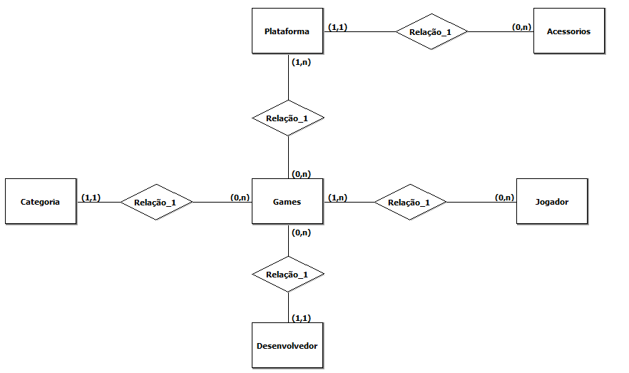
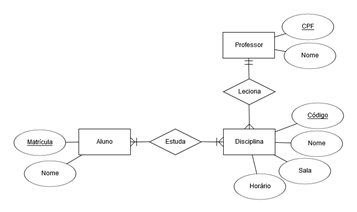

Um SGBD (Sistema de Gerenciamento de Banco de Dados) é um software responsável por criar, gerenciar e manipular bancos de dados, permitindo que usuários e aplicações armazenem, consultem, modifiquem e organizem grandes volumes de informações de forma segura e eficiente. Ele atua como uma ponte entre o usuário (ou o programa) e os dados, garantindo integridade, segurança e fácil acesso às informações.
Sem um SGBD, seria necessário lidar diretamente com os arquivos de dados, o que tornaria o processo mais lento, inseguro e sujeito a erros.
Tipos de SGBD
e Aplicações de SGBD
Os principais bancos de dados são aqueles mais usados no mercado por sua confiabilidade, desempenho e facilidade de integração com diversos sistemas. Eles podem ser relacionais (SQL) ou não relacionais (NoSQL).
Bancos de Dados Relacionais (SQL)
Esses armazenam dados em tabelas com linhas e colunas, e utilizam a linguagem SQL (Structured Query Language) para consultar e manipular informações.
Bancos de Dados Não Relacionais (NoSQL)
Esses bancos armazenam dados de forma flexível, sem seguir o modelo de tabelas, sendo ideais para grandes volumes de dados, redes sociais, e aplicações em tempo real.
Um dicionário de dados é um repositório que descreve todas as informações sobre os dados contidos em um banco de dados. Ele não guarda os dados em si, mas sim as informações sobre eles, como nomes, tipos, tamanhos, restrições e relações entre as tabelas. Em outras palavras, o dicionário de dados funciona como um manual de referência do banco, ajudando desenvolvedores e administradores a entenderem como os dados estão organizados e estruturados.
Função do Dicionário de Dados
A modelagem de banco de dados é o processo de planejar e estruturar como os dados serão organizados dentro de um banco. Ela serve para representar de forma lógica e visual como as informações se relacionam entre si, antes de criar o banco propriamente dito.
Em outras palavras, é como fazer a planta de uma casa antes da construção — a modelagem mostra quais dados existirão, como eles se conectam e como serão armazenados.
A modelagem permite: Definir entidades (como clientes, produtos, pedidos). Identificar atributos (como nome, preço, data). Estabelecer relacionamentos entre essas entidades (como “um cliente faz vários pedidos”). Ela é fundamental para evitar erros, redundâncias e perda de dados, garantindo que o banco seja eficiente e bem estruturado.
O DER é a representação gráfica da modelagem de banco de dados. Ele mostra como as entidades se conectam, usando símbolos e linhas que indicam os relacionamentos.
Elementos principais do DER:

O MER (Modelo Entidade-Relacionamento) é o modelo conceitual que descreve o conteúdo do banco de dados de forma textual ou lógica, enquanto o DER é a representação gráfica desse modelo.
Em resumo:
